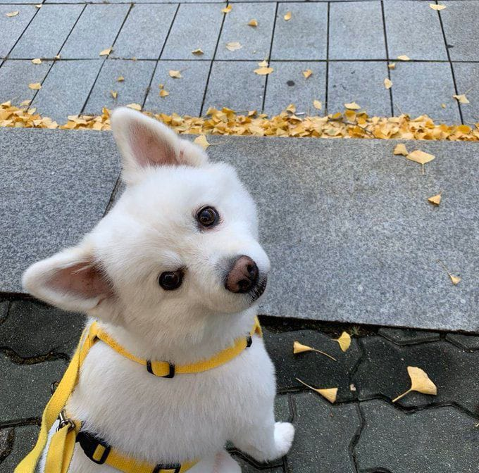
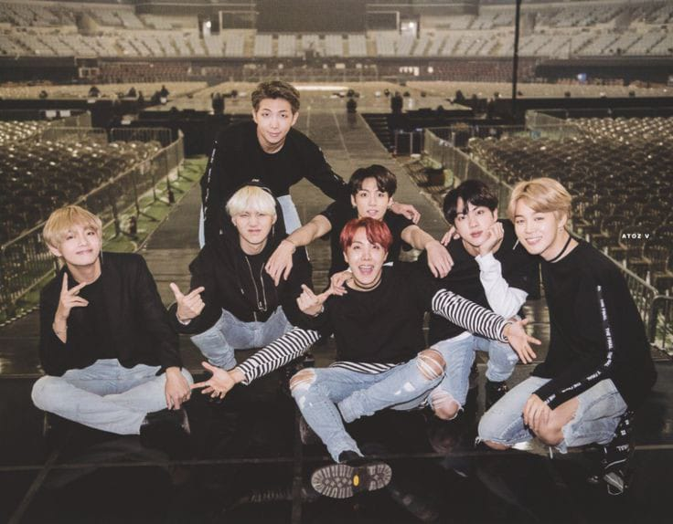
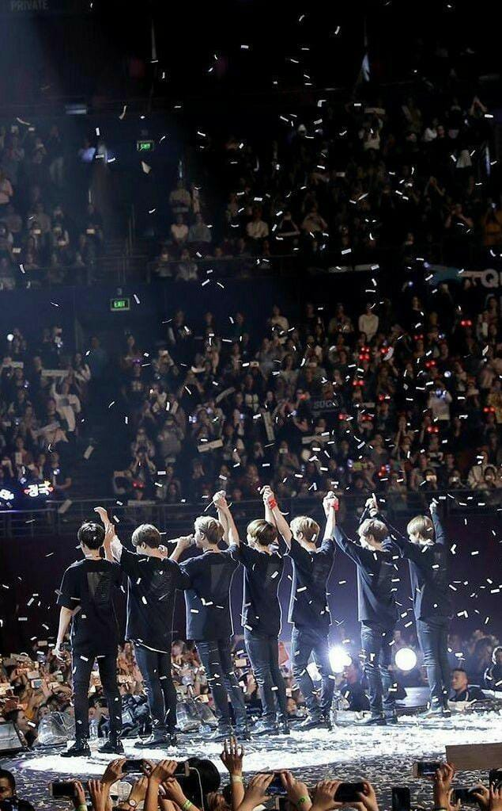

Halo semuanya, jadi saya Kim Namjoon, yang leadernya BTS itu.😎
Do you know BTS? Hahaha, maaf-maaf itu inside jokes. Saya lahir di Ilsan, 12 September 1994, berarti zodiaknya virgo. Saya punya anjing peliharaan namanya Moni, bulunya putih banget jadinya suka bikin deg-degan kalau saya ajak jalan karena takut kotor sebadan. Dia kalau sama saya nyebelin banget, jadi saya serahin ke mama sama adik saya aja :)
Dari umur belasan saya suka banget dengerin Eminem, dan karena dia juga saya jadi suka ngerapp terus punya cita-cita buat jadi rapper. Selain ngerapp saya juga suka banget bikin lagu, mungkin itu alesan kenapa saya bisa direkrut sama agensi yang akhirnya bikin saya ketemu sama 6 orang yang udah jadi temen sekaligus keluarga buat saya. Punya 1 mimpi yang sama dan berusaha buat wujudin mimpi itu bareng-bareng sama mereka, saya seneng banget.
 Kalau ngomongin motivasi, motivasi saya ada 3 sih kayaknya. Yang pertama, diri saya sendiri. Kayaknya kalau bukan diri sendiri yang mau, saya gak bakal mulai-mulai deh. Yang kedua, temen-temen dan orang sekitar saya yang udah ikut bantuin. Kan manusia itu makhluk sosial yaa, jadi saya bersyukur banget punya mereka yang udah selalu bisa kerja sama dimanapun dan kapanpun. Yang terakhir, fans. Wah kalau gak ada mereka, saya gak bakal jadi kayak sekarang. Ribuan cinta yang saya dapet, rasanya gak adil kalau saya gak 'ngebayar' itu. Jadi karena mereka, saya bisa semangat buat terus bikin lagu dan bikin mereka seenggaknya merasa terbayar setelah dengerin karya-karya yang saya buat.